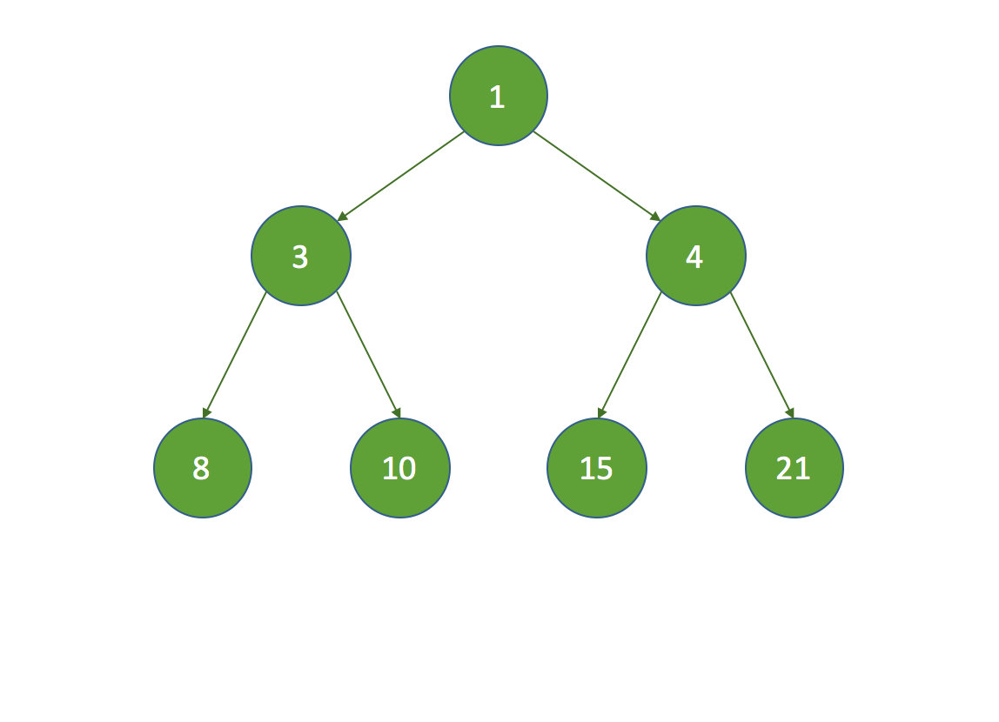
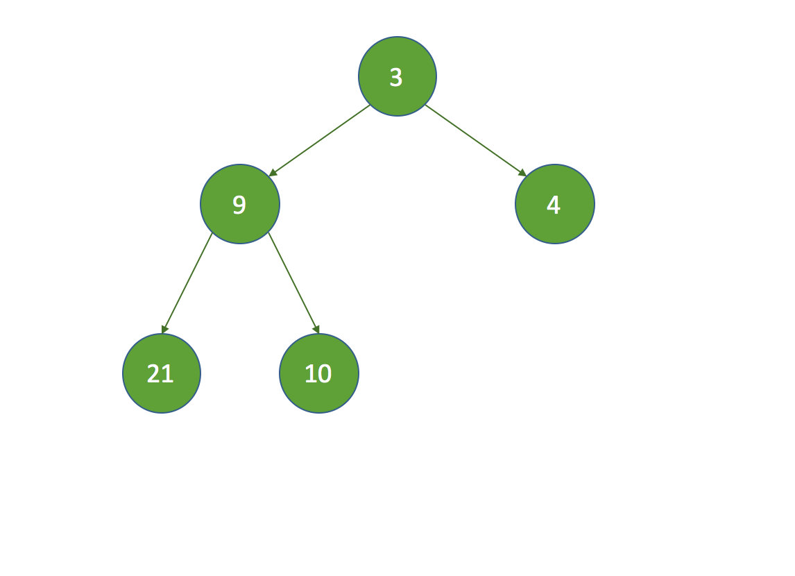

本文详细的介绍了Java中的线程池的用法及原理
转：http://www.ideabuffer.cn/2017/04/04/深入理解Java线程池：ThreadPoolExecutor/#addWorker方法
线程池（一）：ThreadPoolExecutor
线程池介绍
在web开发中，服务器需要接受并处理请求，所以会为一个请求来分配一个线程来进行处理。如果每次请求都新创建一个线程的话实现起来非常简便，但是存在一个问题：
如果并发的请求数量非常多，但每个线程执行的时间很短，这样就会频繁的创建和销毁线程，如此一来会大大降低系统的效率。可能出现服务器在为每个请求创建新线程和销毁线程上花费的时间和消耗的系统资源要比处理实际的用户请求的时间和资源更多。
那么有没有一种办法使执行完一个任务，并不被销毁，而是可以继续执行其他的任务呢？
这就是线程池的目的了。线程池为线程生命周期的开销和资源不足问题提供了解决方案。通过对多个任务重用线程，线程创建的开销被分摊到了多个任务上。
什么时候使用线程池？
- 单个任务处理时间比较短
- 需要处理的任务数量很大
使用线程池的好处
引用自 http://ifeve.com/java-threadpool/ 的说明：
- 降低资源消耗。通过重复利用已创建的线程降低线程创建和销毁造成的消耗。
- 提高响应速度。当任务到达时，任务可以不需要的等到线程创建就能立即执行。
- 提高线程的可管理性。线程是稀缺资源，如果无限制的创建，不仅会消耗系统资源，还会降低系统的稳定性，使用线程池可以进行统一的分配，调优和监控。
Java中的线程池是用ThreadPoolExecutor类来实现的. 本文就结合JDK 1.8对该类的源码来分析一下这个类内部对于线程的创建, 管理以及后台任务的调度等方面的执行原理。
先看一下线程池的类图：

Executor框架接口
Executor框架是一个根据一组执行策略调用，调度，执行和控制的异步任务的框架，目的是提供一种将”任务提交”与”任务如何运行”分离开来的机制。
J.U.C中有三个Executor接口：
- Executor：一个运行新任务的简单接口；
- ExecutorService：扩展了Executor接口。添加了一些用来管理执行器生命周期和任务生命周期的方法；
- ScheduledExecutorService：扩展了ExecutorService。支持Future和定期执行任务。
Executor接口
1 | public interface Executor { |
Executor接口只有一个execute方法，用来替代通常创建或启动线程的方法。例如，使用Thread来创建并启动线程的代码如下：
1 | Thread t = new Thread(); |
使用Executor来启动线程执行任务的代码如下：
1 | Thread t = new Thread(); |
对于不同的Executor实现，execute()方法可能是创建一个新线程并立即启动，也有可能是使用已有的工作线程来运行传入的任务，也可能是根据设置线程池的容量或者阻塞队列的容量来决定是否要将传入的线程放入阻塞队列中或者拒绝接收传入的线程。
ExecutorService接口
ExecutorService接口继承自Executor接口，提供了管理终止的方法，以及可为跟踪一个或多个异步任务执行状况而生成 Future 的方法。增加了shutDown()，shutDownNow()，invokeAll()，invokeAny()和submit()等方法。如果需要支持即时关闭，也就是shutDownNow()方法，则任务需要正确处理中断。
ScheduledExecutorService接口
ScheduledExecutorService扩展ExecutorService接口并增加了schedule方法。调用schedule方法可以在指定的延时后执行一个Runnable或者Callable任务。ScheduledExecutorService接口还定义了按照指定时间间隔定期执行任务的scheduleAtFixedRate()方法和scheduleWithFixedDelay()方法。
ThreadPoolExecutor分析
ThreadPoolExecutor继承自AbstractExecutorService，也是实现了ExecutorService接口。
几个重要的字段
1 | private final AtomicInteger ctl = new AtomicInteger(ctlOf(RUNNING, 0)); |
ctl是对线程池的运行状态和线程池中有效线程的数量进行控制的一个字段， 它包含两部分的信息: 线程池的运行状态 (runState) 和线程池内有效线程的数量 (workerCount)，这里可以看到，使用了Integer类型来保存，高3位保存runState，低29位保存workerCount。COUNT_BITS 就是29，CAPACITY就是1左移29位减1（29个1），这个常量表示workerCount的上限值，大约是5亿。
下面再介绍下线程池的运行状态. 线程池一共有五种状态, 分别是:
RUNNING ：能接受新提交的任务，并且也能处理阻塞队列中的任务；
SHUTDOWN：关闭状态，不再接受新提交的任务，但却可以继续处理阻塞队列中已保存的任务。在线程池处于 RUNNING 状态时，调用 shutdown()方法会使线程池进入到该状态。（finalize() 方法在执行过程中也会调用shutdown()方法进入该状态）；「注意shutdown可能会出现有线程正在等阻塞队列中的任务过来，但是突然shutdown，不会有任务再来了，那线程就会一直阻塞，导致无法回收，所以 shutdown()方法中有调用interruptIdleWorkers()。」
STOP：不能接受新任务，也不处理队列中的任务，会中断正在处理任务的线程。在线程池处于 RUNNING 或 SHUTDOWN 状态时，调用 shutdownNow() 方法会使线程池进入到该状态；
TIDYING：如果所有的任务都已终止了，workerCount (有效线程数) 为0，线程池进入该状态后会调用 terminated() 方法进入TERMINATED 状态。
TERMINATED
：在terminated() 方法执行完后进入该状态，默认terminated()方法中什么也没有做。
- 线程池不是RUNNING状态；
- 线程池状态不是TIDYING状态或TERMINATED状态；
- 如果线程池状态是SHUTDOWN并且workerQueue为空；
- workerCount为0；
- 设置TIDYING状态成功。
下图为线程池的状态转换过程：

ctl相关方法
这里还有几个对ctl进行计算的方法：
1 | private static int runStateOf(int c) { return c & ~CAPACITY; } |
- runStateOf：获取运行状态；
- workerCountOf：获取活动线程数；
- ctlOf：获取运行状态和活动线程数的值。
ThreadPoolExecutor构造方法
1 | public ThreadPoolExecutor(int corePoolSize, |
构造方法中的字段含义如下：
corePoolSize：核心线程数量，当有新任务在execute()方法提交时，会执行以下判断：
- 如果运行的线程少于 corePoolSize，则创建新线程来处理任务，即使线程池中的其他线程是空闲的；
- 如果线程池中的线程数量大于等于 corePoolSize 且小于 maximumPoolSize，则只有当workQueue满时才创建新的线程去处理任务；
- 如果设置的corePoolSize 和 maximumPoolSize相同，则创建的线程池的大小是固定的，这时如果有新任务提交，若workQueue未满，则将请求放入workQueue中，等待有空闲的线程去从workQueue中取任务并处理；
- 如果运行的线程数量大于等于maximumPoolSize，这时如果workQueue已经满了，则通过handler所指定的策略来处理任务；
所以，任务提交时，判断的顺序为 corePoolSize –> workQueue –> maximumPoolSize。
maximumPoolSize：最大线程数量；
workQueue：等待队列，当任务提交时，如果线程池中的线程数量大于等于corePoolSize的时候，把该任务封装成一个Worker对象放入等待队列，当提交一个新的任务到线程池以后, 线程池会根据当前线程池中正在运行着的线程的数量来决定对该任务的处理方式，也就是 BlockingQueue 的选择，主要有以下几种处理方式:
直接切换：这种方式常用的队列是SynchronousQueue，但现在还没有研究过该队列，这里暂时还没法介绍；
使用无界队列：一般使用基于链表的阻塞队列LinkedBlockingQueue。如果使用这种方式，那么线程池中能够创建的最大线程数就是corePoolSize，而maximumPoolSize就不会起作用了「因为队列永远不会满…」（后面也会说到）。当线程池中所有的核心线程都是RUNNING状态时，这时一个新的任务提交就会放入等待队列中。
使用有界队列
：一般使用ArrayBlockingQueue。使用该方式可以将线程池的最大线程数量限制为maximumPoolSize，这样能够降低资源的消耗，但同时这种方式也使得线程池对线程的调度变得更困难，因为线程池和队列的容量都是有限的值，所以要想使线程池处理任务的吞吐率达到一个相对合理的范围，又想使线程调度相对简单，并且还要尽可能的降低线程池对资源的消耗，就需要合理的设置这两个数量。
- 如果要想降低系统资源的消耗（包括CPU的使用率，操作系统资源的消耗，上下文环境切换的开销等）, 可以设置较大的队列容量和较小的线程池容量, 但这样也会降低线程处理任务的吞吐量。
- 如果提交的任务经常发生阻塞，那么可以考虑通过调用 setMaximumPoolSize() 方法来重新设定线程池的容量。
- 如果队列的容量设置的较小，通常需要将线程池的容量设置大一点，这样CPU的使用率会相对的高一些。但如果线程池的容量设置的过大，则在提交的任务数量太多的情况下，并发量会增加，那么线程之间的调度就是一个要考虑的问题，因为这样反而有可能降低处理任务的吞吐量。
keepAliveTime：线程池维护线程所允许的空闲时间。当线程池中的线程数量大于corePoolSize的时候，如果这时没有新的任务提交，核心线程外的线程不会立即销毁，而是会等待，直到等待的时间超过了keepAliveTime；
threadFactory：它是ThreadFactory类型的变量，用来创建新线程。默认使用Executors.defaultThreadFactory() 来创建线程。使用默认的ThreadFactory来创建线程时，会使新创建的线程具有相同的NORM_PRIORITY优先级并且是非守护线程，同时也设置了线程的名称。
handler：它是RejectedExecutionHandler类型的变量，表示线程池的饱和策略。如果阻塞队列满了并且没有空闲的线程，这时如果继续提交任务，就需要采取一种策略处理该任务。线程池提供了4种策略：
- AbortPolicy：直接抛出异常，这是默认策略；
- CallerRunsPolicy：用调用者所在的线程来执行任务；
- DiscardOldestPolicy：丢弃阻塞队列中靠最前的任务，并执行当前任务；
- DiscardPolicy：直接丢弃任务；
execute方法
execute()方法用来提交任务，代码如下：
1 | public void execute(Runnable command) { |
简单来说，在执行execute()方法时如果状态一直是RUNNING时，的执行过程如下：
- 如果
workerCount < corePoolSize，则创建并启动一个线程来执行新提交的任务； - 如果
workerCount >= corePoolSize，且线程池内的阻塞队列未满，则将任务添加到该阻塞队列中； - 如果
workerCount >= corePoolSize && workerCount < maximumPoolSize，且线程池内的阻塞队列已满，则创建并启动一个线程来执行新提交的任务； - 如果
workerCount >= maximumPoolSize，并且线程池内的阻塞队列已满, 则根据拒绝策略来处理该任务, 默认的处理方式是直接抛异常。
这里要注意一下addWorker(null, false);，也就是创建一个线程，但并没有传入任务，因为任务已经被添加到workQueue中了，所以worker在执行的时候，会直接从workQueue中获取任务。所以，在workerCountOf(recheck) == 0时执行addWorker(null, false);也是为了保证线程池在RUNNING状态下必须要有一个线程来执行任务。
execute方法执行流程如下：

addWorker方法
addWorker方法的主要工作是在线程池中创建一个新的线程并执行，firstTask参数 用于指定新增的线程执行的第一个任务，core参数为true表示在新增线程时会判断当前活动线程数是否少于corePoolSize，false表示新增线程前需要判断当前活动线程数是否少于maximumPoolSize，代码如下：
1 | private boolean addWorker(Runnable firstTask, boolean core) { |
注意一下这里的t.start()这个语句，启动时会调用Worker类中的run方法，Worker本身实现了Runnable接口，所以一个Worker类型的对象也是一个线程。
Worker类
线程池中的每一个线程被封装成一个Worker对象，ThreadPool维护的其实就是一组Worker对象，看一下Worker的定义：
1 | private final class Worker |
Worker类继承了AQS，并实现了Runnable接口，注意其中的firstTask和thread属性：firstTask用它来保存传入的任务；thread是在调用构造方法时通过ThreadFactory来创建的线程，是用来处理任务的线程。
在调用构造方法时，需要把任务传入，这里通过getThreadFactory().newThread(this);来新建一个线程，newThread方法传入的参数是this，因为Worker本身继承了Runnable接口，也就是一个线程，所以一个Worker对象在启动的时候会调用Worker类中的run方法。
Worker继承了AQS，使用AQS来实现独占锁的功能。为什么不使用ReentrantLock来实现呢？可以看到tryAcquire方法，它是不允许重入的，而ReentrantLock是允许重入的：
- lock方法一旦获取了独占锁，表示当前线程正在执行任务中；
- 如果正在执行任务，则不应该中断线程；
- 如果该线程现在不是独占锁的状态，也就是空闲的状态，说明它没有在处理任务，这时可以对该线程进行中断；
- 线程池在执行shutdown方法或tryTerminate方法时会调用interruptIdleWorkers方法来中断空闲的线程，interruptIdleWorkers方法会使用tryLock方法来判断线程池中的线程是否是空闲状态；
- 之所以设置为不可重入，是因为我们不希望任务在调用像setCorePoolSize这样的线程池控制方法时重新获取锁。如果使用ReentrantLock，它是可重入的，这样如果在任务中调用了如setCorePoolSize这类线程池控制的方法，会中断正在运行的线程。
所以，Worker继承自AQS，用于判断线程是否空闲以及是否可以被中断。
此外，在构造方法中执行了setState(-1);，把state变量设置为-1，为什么这么做呢？是因为AQS中默认的state是0，如果刚创建了一个Worker对象，还没有执行任务时，这时就不应该被中断，看一下tryAquire方法：
1 | protected boolean tryAcquire(int unused) { |
tryAcquire方法是根据state是否是0来判断的，所以，setState(-1);将state设置为-1是为了禁止在执行任务前对线程进行中断。
正因为如此，在runWorker方法中会先调用Worker对象的unlock方法将state设置为0.
runWorker方法
在Worker类中的run方法调用了runWorker方法来执行任务，runWorker方法的代码如下：
1 | final void runWorker(Worker w) { |
这里说明一下第一个if判断，目的是：
- 如果线程池正在停止，那么要保证当前线程是中断状态；
- 如果不是的话，则要保证当前线程不是中断状态；
这里要考虑在执行该if语句期间可能也执行了shutdownNow方法，shutdownNow方法会把状态设置为STOP，回顾一下STOP状态：
不能接受新任务，也不处理队列中的任务，会中断正在处理任务的线程。在线程池处于 RUNNING 或 SHUTDOWN 状态时，调用 shutdownNow() 方法会使线程池进入到该状态。
STOP状态要中断线程池中的所有线程，而这里使用Thread.interrupted()来判断是否中断是为了确保在RUNNING或者SHUTDOWN状态时线程是非中断状态的，因为Thread.interrupted()方法会复位中断的状态。
总结一下runWorker方法的执行过程：
- while循环不断地通过getTask()方法获取任务；
- getTask()方法从阻塞队列中取任务；
- 如果线程池正在停止，那么要保证当前线程是中断状态，否则要保证当前线程不是中断状态；
- 调用
task.run()执行任务； - 如果task为null则跳出循环，执行processWorkerExit()方法；
- runWorker方法执行完毕，也代表着Worker中的run方法执行完毕，销毁线程。
这里的beforeExecute方法和afterExecute方法在ThreadPoolExecutor类中是空的，留给子类来实现。
completedAbruptly变量来表示在执行任务过程中是否出现了异常，在processWorkerExit方法中会对该变量的值进行判断。
getTask方法
getTask方法用来从阻塞队列中取任务，代码如下：
1 | private Runnable getTask() { |
这里重要的地方是第二个if判断，目的是控制线程池的有效线程数量。由上文中的分析可以知道，在执行execute方法时，如果当前线程池的线程数量超过了corePoolSize且小于maximumPoolSize，并且workQueue已满时，则可以增加工作线程，但这时如果超时没有获取到任务，也就是timedOut为true的情况，说明workQueue已经为空了，也就说明了当前线程池中不需要那么多线程来执行任务了，可以把多于corePoolSize数量的线程销毁掉，保持线程数量在corePoolSize即可。
什么时候会销毁？当然是runWorker方法执行完之后，也就是Worker中的run方法执行完，由JVM自动回收。
getTask方法返回null时，在runWorker方法中会跳出while循环，然后会执行processWorkerExit方法。
processWorkerExit方法
1 | private void processWorkerExit(Worker w, boolean completedAbruptly) { |
至此，processWorkerExit执行完之后，工作线程被销毁，以上就是整个工作线程的生命周期，从execute方法开始，Worker使用ThreadFactory创建新的工作线程，runWorker通过getTask获取任务，然后执行任务，如果getTask返回null，进入processWorkerExit方法，整个线程结束，如图所示：

tryTerminate方法
tryTerminate方法根据线程池状态进行判断是否结束线程池，代码如下：
1 | final void tryTerminate() { |
interruptIdleWorkers(ONLY_ONE)的作用是因为在getTask方法中执行workQueue.take()时，如果不执行中断会一直阻塞。在下面介绍的shutdown方法中，会中断所有空闲的工作线程，如果在执行shutdown时工作线程没有空闲，然后又去调用了getTask方法，这时如果workQueue中没有任务了，调用workQueue.take()时就会一直阻塞。所以每次在工作线程结束时调用tryTerminate方法来尝试中断一个空闲工作线程，避免在队列为空时取任务一直阻塞的情况。
shutdown方法
shutdown方法要将线程池切换到SHUTDOWN状态，并调用interruptIdleWorkers方法请求中断所有空闲的worker，最后调用tryTerminate尝试结束线程池。
1 | public void shutdown() { |
这里思考一个问题：在runWorker方法中，执行任务时对Worker对象w进行了lock操作，为什么要在执行任务的时候对每个工作线程都加锁呢？
下面仔细分析一下：
- 在getTask方法中，如果这时线程池的状态是SHUTDOWN并且workQueue为空，那么就应该返回null来结束这个工作线程，而使线程池进入SHUTDOWN状态需要调用shutdown方法；
- shutdown方法会调用interruptIdleWorkers来中断空闲的线程，interruptIdleWorkers持有mainLock，会遍历workers来逐个判断工作线程是否空闲。但getTask方法中没有mainLock；
- 在getTask中，如果判断当前线程池状态是RUNNING，并且阻塞队列为空，那么会调用
workQueue.take()进行阻塞； - 如果在判断当前线程池状态是RUNNING后，这时调用了shutdown方法把状态改为了SHUTDOWN，这时如果不进行中断，那么当前的工作线程在调用了
workQueue.take()后会一直阻塞而不会被销毁，因为在SHUTDOWN状态下不允许再有新的任务添加到workQueue中，这样一来线程池永远都关闭不了了； - 由上可知，shutdown方法与getTask方法（从队列中获取任务时）存在竞态条件；
- 解决这一问题就需要用到线程的中断，也就是为什么要用interruptIdleWorkers方法。在调用
workQueue.take()时，如果发现当前线程在执行之前或者执行期间是中断状态，则会抛出InterruptedException，解除阻塞的状态； - 但是要中断工作线程，还要判断工作线程是否是空闲的，如果工作线程正在处理任务，就不应该发生中断；
- 所以Worker继承自AQS，在工作线程处理任务时会进行lock，interruptIdleWorkers在进行中断时会使用tryLock来判断该工作线程是否正在处理任务，如果tryLock返回true，说明该工作线程当前未执行任务，这时才可以被中断。
下面就来分析一下interruptIdleWorkers方法。
interruptIdleWorkers方法
1 | private void interruptIdleWorkers() { |
interruptIdleWorkers遍历workers中所有的工作线程，若线程没有被中断tryLock成功，就中断该线程。
为什么需要持有mainLock？因为workers是HashSet类型的，不能保证线程安全。
shutdownNow方法
1 | public List<Runnable> shutdownNow() { |
shutdownNow方法与shutdown方法类似，不同的地方在于：
- 设置状态为STOP；
- 中断所有工作线程，无论是否是空闲的；
- 取出阻塞队列中没有被执行的任务并返回。
shutdownNow方法执行完之后调用tryTerminate方法，该方法在上文已经分析过了，目的就是使线程池的状态设置为TERMINATED。
线程池的监控
通过线程池提供的参数进行监控。线程池里有一些属性在监控线程池的时候可以使用
- getTaskCount：线程池已经执行的和未执行的任务总数；
- getCompletedTaskCount：线程池已完成的任务数量，该值小于等于taskCount；
- getLargestPoolSize：线程池曾经创建过的最大线程数量。通过这个数据可以知道线程池是否满过，也就是达到了maximumPoolSize；
- getPoolSize：线程池当前的线程数量；
- getActiveCount：当前线程池中正在执行任务的线程数量。
通过这些方法，可以对线程池进行监控，在ThreadPoolExecutor类中提供了几个空方法，如beforeExecute方法，afterExecute方法和terminated方法，可以扩展这些方法在执行前或执行后增加一些新的操作，例如统计线程池的执行任务的时间等，可以继承自ThreadPoolExecutor来进行扩展。
总结
本文比较详细的分析了线程池的工作流程，总体来说有如下几个内容：
- 分析了线程的创建，任务的提交，状态的转换以及线程池的关闭；
- 这里通过execute方法来展开线程池的工作流程，execute方法通过corePoolSize，maximumPoolSize以及阻塞队列的大小来判断决定传入的任务应该被立即执行，还是应该添加到阻塞队列中，还是应该拒绝任务。
- 介绍了线程池关闭时的过程，也分析了shutdown方法与getTask方法存在竞态条件；
- 在获取任务时，要通过线程池的状态来判断应该结束工作线程还是阻塞线程等待新的任务，也解释了为什么关闭线程池时要中断工作线程以及为什么每一个worker都需要lock。
在向线程池提交任务时，除了execute方法，还有一个submit方法，submit方法会返回一个Future对象用于获取返回值，具体可以见 多线程（一）中的 最开始的 demo。
遇到的问题
最近好久没复习了，突然有点对线程池晕头转向，阻塞队列到底是存储什么的呢？里面是怎么一个存储形式呢？阻塞队列又是如何实现的呢？阻塞队列和 AQS 中的 CLH 变体队列又有什么关系和联系呢？线程池中的线程又是如何管理的呢？他们是如何存储的呢？线程池中的线程又是怎么去运作的呢？
来，这些问题一个一个来解决！
- 阻塞队列到底存储的是什么？
存储的是 Runnable 对象，也就是我们常说的任务
- 里面是如何存储以及如何实现的？
ArrayBlockingQueue 是利用数组存储的，LinkedBlockingQueue 是利用的链表存储的，这里比普通的队列多了一个使用了 ReentrantLock 保证线程安全并且通过使用 Condition 队列保证消费者/生产者模式。
- 阻塞队列和 AQS 的 CLH变体队列有啥关系和联系
没有任何关系，CLH 变体队列是同步队列，存储的是线程包装后的 Node，我们这里的阻塞队列仅仅是任务包装后的节点，所以并没有 CLH 变体队列那么复杂，不需要进行一个线程唤醒阻塞的过程「park、unpark」，也无需去考虑共享锁和独占锁之类的，更不用考虑同步队列和条件队列的切换过程。
- 线程池中的线程是如何管理的呢？又是如何存储的呢？
线程池其实管理的并不是线程，而是 Worker，Worker 包括的属性有线程、任务，每一个 Worker 都是用 HashSet 存储的。
- 线程池中的线程如何运作的？
最开始的 Worker 是直接任务来了就直接 new thread 并接受任务，因为此时还没到核心线程数，当到了核心线程数之后，Worker 就会去队列里 take 相应的任务，如果队列也满了的话，就去 new 新的 Worker 接受任务，如果到了最大线程数，就直接默认抛异常「当然还有另外三种措施：1. 丢弃阻塞队列中最前面的 2. 直接不管这个任务 3. 使用调用的这个线程去执行」。
这里 Worker 去拿任务需要注意一下，由于 阻塞队列是线程安全的，所以不会存在一个任务可能被多个线程取走，这是不可能的，其次，得注意一下，Worker 有去继承 AQS，这是我认为线程池中写的最好的一块，主要是解决了两个问题「支持中断以及标记线程是否空闲」，我下面也有详细说这个。
- 如何保证核心线程不被销毁
- timedOut超时标记默认设置为false；
- 计算timed的值，该值决定了线程的生死大权，(timed && timedOut) 即是线程超时回收的条件之一，需要注意的是第一次(timed && timedOut) 为false，因为timedOut默认值为false，此时还没到poll超时获取的操作；
- 根据timed值来决定是用阻塞超时获取任务还是阻塞获取任务，如果用阻塞超时获取任务，超时后timedOut会被设置为true，接着继续循环，若(timed && timedOut) 为true，满足线程超时回收。
没有组织的一些话，留在这吧，当时想到啥就说啥了
「问题的核心是区分开 Runnable 和 Thread的区别，一个是任务，一个是线程」
「阻塞队列中存储的是Runnable，阻塞队列底层就是链表实现，然后通过 ReentrantLock 达到线程安全，并且通过 Condition 完成生产者/消费者模式，然后线程池中的线程使用 hashSet 存储，核心线程池中的线程由于 timeout等于无穷所以不会被销毁。阻塞队列和 AQS 没有关系，只是用到了 Condition 和 ReentrantLock 」
「线程池的线程，new 出来后，会被封装成 Worker 对象，然后里面可以运行任务，所有的 Worker 是放在 HashSet 中的。」
「线程池中我觉得最精妙的地方是让 worker 去继承 AQS，这是非常巧妙的设计，这个设计主要是为了在更改 shutdown 和 stop 的时候做出的设计，
- 我们知道，shutdown就是不再接受新的任务，但是不能把正在运行的任务停掉，同时要把处于空闲的状态的线程停掉，在这里如何区分线程是否空闲是一个问题，源码的解决方案是让 worker 包装成一个互斥锁，如果在运行就给自己加锁，这样我判断线程是否空闲就可以直接用 tryAcquire() 去判断了；
- 原因之二就是 stop 的时候，我们是需要强制停掉正在运行的任务的，而AQS刚好就提供响应中断，所以这又是worker继承AQS的一大原因。」
http://objcoding.com/2019/04/25/threadpool-running/#worker 这个对 ”如何保证核心线程不被销毁“讲的挺好的
线程池（二）：ScheduledThreadPoolExecutor
转：http://www.ideabuffer.cn/2017/04/14/深入理解Java线程池：ScheduledThreadPoolExecutor/
介绍
自JDK1.5开始，JDK提供了ScheduledThreadPoolExecutor类来支持周期性任务的调度。在这之前的实现需要依靠Timer和TimerTask或者其它第三方工具来完成。但Timer有不少的缺陷：
- Timer是单线程模式；
- 如果在执行任务期间某个TimerTask耗时较久，那么就会影响其它任务的调度；
- Timer的任务调度是基于绝对时间的，对系统时间敏感；
- Timer不会捕获执行TimerTask时所抛出的异常，由于Timer是单线程，所以一旦出现异常，则线程就会终止，其他任务也得不到执行。
ScheduledThreadPoolExecutor继承ThreadPoolExecutor来重用线程池的功能，它的实现方式如下：
- 将任务封装成ScheduledFutureTask对象，ScheduledFutureTask基于相对时间，不受系统时间的改变所影响；
- ScheduledFutureTask实现了
java.lang.Comparable接口和java.util.concurrent.Delayed接口，所以有两个重要的方法：compareTo和getDelay。compareTo方法用于比较任务之间的优先级关系，如果距离下次执行的时间间隔较短，则优先级高；getDelay方法用于返回距离下次任务执行时间的时间间隔； - ScheduledThreadPoolExecutor定义了一个DelayedWorkQueue，它是一个有序队列，会通过每个任务按照距离下次执行时间间隔的大小来排序；
- ScheduledFutureTask继承自FutureTask，可以通过返回Future对象来获取执行的结果。
通过如上的介绍，可以对比一下Timer和ScheduledThreadPoolExecutor：
| Timer | ScheduledThreadPoolExecutor |
|---|---|
| 单线程 | 多线程 |
| 单个任务执行时间影响其他任务调度 | 多线程，不会影响 |
| 基于绝对时间 | 基于相对时间 |
| 一旦执行任务出现异常不会捕获，其他任务得不到执行 | 多线程，单个任务的执行不会影响其他线程 |
所以，在JDK1.5之后，应该没什么理由继续使用Timer进行任务调度了。
ScheduledThreadPoolExecutor的使用
下面用一个具体的例子来说明ScheduledThreadPoolExecutor的使用：
1 | public class ScheduledThreadPoolTest { |
下面就来具体分析一下ScheduledThreadPoolExecutor的实现过程。
ScheduledThreadPoolExecutor的实现
ScheduledThreadPoolExecutor的类结构
看下ScheduledThreadPoolExecutor内部的类图：

不要被这么多类吓到，这里只不过是为了更清楚的了解ScheduledThreadPoolExecutor有关调度和队列的接口。
ScheduledThreadPoolExecutor继承自ThreadPoolExecutor，实现了ScheduledExecutorService接口，该接口定义了schedule等任务调度的方法。
同时ScheduledThreadPoolExecutor有两个重要的内部类：DelayedWorkQueue和ScheduledFutureTask。可以看到，DelayeddWorkQueue是一个阻塞队列，而ScheduledFutureTask继承自FutureTask，并且实现了Delayed接口。有关FutureTask的介绍请参考另一篇文章：FutureTask源码解析。
ScheduledThreadPoolExecutor的构造方法
ScheduledThreadPoolExecutor有3中构造方法：
1 | public ScheduledThreadPoolExecutor(int corePoolSize, |
因为ScheduledThreadPoolExecutor继承自ThreadPoolExecutor，所以这里都是调用的ThreadPoolExecutor类的构造方法。有关ThreadPoolExecutor可以参考深入理解Java线程池：ThreadPoolExecutor。
这里注意传入的阻塞队列是DelayedWorkQueue类型的对象。后面会详细介绍。
schedule方法
在上文的例子中，使用了schedule方法来进行任务调度，schedule方法的代码如下：
1 | public ScheduledFuture<?> schedule(Runnable command, |
首先，这里的两个重载的schedule方法只是传入的第一个参数不同，可以是Runnable对象或者Callable对象。会把传入的任务封装成一个RunnableScheduledFuture对象，其实也就是ScheduledFutureTask对象，decorateTask默认什么功能都没有做，子类可以重写该方法：
1 | /** |
然后，通过调用delayedExecute方法来延时执行任务。
最后，返回一个ScheduledFuture对象。
scheduleAtFixedRate方法
该方法设置了执行周期，下一次执行时间相当于是上一次的执行时间加上period，它是采用已固定的频率来执行任务：
1 | public ScheduledFuture<?> scheduleAtFixedRate(Runnable command, |
scheduleWithFixedDelay方法
该方法设置了执行周期，与scheduleAtFixedRate方法不同的是，下一次执行时间是上一次任务执行完的系统时间加上period，因而具体执行时间不是固定的，但周期是固定的，是采用相对固定的延迟来执行任务：
1 | public ScheduledFuture<?> scheduleWithFixedDelay(Runnable command, |
注意这里的unit.toNanos(-delay));，这里把周期设置为负数来表示是相对固定的延迟执行。
scheduleAtFixedRate和scheduleWithFixedDelay的区别在setNextRunTime方法中就可以看出来：
1 | private void setNextRunTime() { |
setNextRunTime方法会在run方法中执行完任务后调用。
triggerTime方法
triggerTime方法用于获取下一次执行的具体时间：
1 | private long triggerTime(long delay, TimeUnit unit) { |
这里的delay < (Long.MAX_VALUE >> 1是为了判断是否要防止Long类型溢出，如果delay的值小于Long类型最大值的一半，则直接返回delay，否则需要进行防止溢出处理。
overflowFree方法
该方法的作用是限制队列中所有节点的延迟时间在Long.MAX_VALUE之内，防止在compareTo方法中溢出。
1 | private long overflowFree(long delay) { |
当一个任务已经可以执行出队操作，但还没有执行，可能由于线程池中的工作线程不是空闲的。具体分析一下这种情况：
- 为了方便说明，假设Long.MAX_VALUE=1023，也就是11位，并且当前的时间是100，调用triggerTime时并没有对delay进行判断，而是直接返回了
now() + delay，也就是相当于100 + 1023，这肯定是溢出了，那么返回的时间是-925； - 如果头节点已经可以出队但是还没有执行出队，那么头节点的执行时间应该是小于当前时间的，假设是95；
- 这时调用offer方法向队列中添加任务，在offer方法中会调用siftUp方法来排序，在siftUp方法执行时又会调用ScheduledFutureTask中的compareTo方法来比较执行时间；
- 这时如果执行到了compareTo方法中的
long diff = time - x.time;时，那么计算后的结果就是-925 - 95 = -1020，那么将返回-1，而正常情况应该是返回1，因为新加入的任务的执行时间要比头结点的执行时间要晚，这就不是我们想要的结果了，这会导致队列中的顺序不正确。 - 同理也可以算一下在执行compareTo方法中的
long diff = getDelay(NANOSECONDS) - other.getDelay(NANOSECONDS);时也会有这种情况； - 所以在triggerTime方法中对delay的大小做了判断，就是为了防止这种情况发生。
如果执行了overflowFree方法呢，这时headDelay = 95 - 100 = -5，然后执行delay = 1023 + (-5) = 1018，那么triggerTime会返回100 + 1018 = -930，再执行compareTo方法中的long diff = time - x.time;时，diff = -930 - 95 = -930 - 100 + 5 = 1018 + 5 = 1023，没有溢出，符合正常的预期。
所以，overflowFree方法中把已经超时的部分时间给减去，就是为了避免在compareTo方法中出现溢出情况。
（说实话，这段代码看的很痛苦，一般情况下也不会发生这种情况，谁会传一个Long.MAX_VALUE呢。要知道Long.MAX_VALUE的纳秒数换算成年的话是292年，谁会这么无聊。。。）
ScheduledFutureTask的getDelay方法
1 | public long getDelay(TimeUnit unit) { |
ScheduledFutureTask的构造方法
ScheduledFutureTask继承自FutureTask并实现了RunnableScheduledFuture接口，具体可以参考上文的类图，构造方法如下：
1 | ScheduledFutureTask(Runnable r, V result, long ns) { |
这里面有几个重要的属性，下面来解释一下：
- time：下次任务执行时的时间；
- period：执行周期；
- sequenceNumber：保存任务被添加到ScheduledThreadPoolExecutor中的序号。
在schedule方法中，创建完ScheduledFutureTask对象之后，会执行delayedExecute方法来执行任务。
delayedExecute方法
1 | private void delayedExecute(RunnableScheduledFuture<?> task) { |
说一下这里的第二个if判断：
- 如果不是SHUTDOWN状态，执行else，否则执行步骤2；
- 如果在当前线程池运行状态下可以执行任务，执行else，否则执行步骤3；
- 从阻塞队列中删除任务，如果失败，执行else，否则执行步骤4；
- 取消任务，但不中断执行中的任务。
对于步骤2，可以通过setContinueExistingPeriodicTasksAfterShutdownPolicy方法设置在线程池关闭时，周期任务继续执行，默认为false，也就是线程池关闭时，不再执行周期任务。
ensurePrestart方法在ThreadPoolExecutor中定义：
1 | void ensurePrestart() { |
调用了addWorker方法，可以在深入理解Java线程池：ThreadPoolExecutor中查看addWorker方法的介绍，线程池中的工作线程是通过该方法来启动并执行任务的。
ScheduledFutureTask的run方法
回顾一下线程池的执行过程：当线程池中的工作线程启动时，不断地从阻塞队列中取出任务并执行，当然，取出的任务实现了Runnable接口，所以是通过调用任务的run方法来执行任务的。
这里的任务类型是ScheduledFutureTask，所以下面看一下ScheduledFutureTask的run方法：
1 | public void run() { |
有关FutureTask的run方法和runAndReset方法，可以参考FutureTask源码解析。
分析一下执行过程：
- 如果当前线程池运行状态不可以执行任务，取消该任务，然后直接返回，否则执行步骤2；
- 如果不是周期性任务，调用FutureTask中的run方法执行，会设置执行结果，然后直接返回，否则执行步骤3；
- 如果是周期性任务，调用FutureTask中的runAndReset方法执行，不会设置执行结果，然后直接返回，否则执行步骤4和步骤5；
- 计算下次执行该任务的具体时间；
- 重复执行任务。
ScheduledFutureTask的reExecutePeriodic方法
1 | void reExecutePeriodic(RunnableScheduledFuture<?> task) { |
该方法和delayedExecute方法类似，不同的是：
- 由于调用reExecutePeriodic方法时已经执行过一次周期性任务了，所以不会reject当前任务；
- 传入的任务一定是周期性任务。
onShutdown方法
onShutdown方法是ThreadPoolExecutor中的钩子方法，在ThreadPoolExecutor中什么都没有做，参考深入理解Java线程池：ThreadPoolExecutor，该方法是在执行shutdown方法时被调用：
1 | void onShutdown() { |
DelayedWorkQueue
ScheduledThreadPoolExecutor之所以要自己实现阻塞的工作队列，是因为ScheduledThreadPoolExecutor要求的工作队列有些特殊。
DelayedWorkQueue是一个基于堆的数据结构，类似于DelayQueue和PriorityQueue。在执行定时任务的时候，每个任务的执行时间都不同，所以DelayedWorkQueue的工作就是按照执行时间的升序来排列，执行时间距离当前时间越近的任务在队列的前面（注意：这里的顺序并不是绝对的，堆中的排序只保证了子节点的下次执行时间要比父节点的下次执行时间要大，而叶子节点之间并不一定是顺序的，下文中会说明）。
堆结构如下图所示：
可见，DelayedWorkQueue是一个基于最小堆结构的队列。堆结构可以使用数组表示，可以转换成如下的数组：

在这种结构中，可以发现有如下特性：
假设，索引值从0开始，子节点的索引值为k，父节点的索引值为p，则：
- 一个节点的左子节点的索引为：k = p * 2 + 1；
- 一个节点的右子节点的索引为：k = (p + 1) * 2；
- 一个节点的父节点的索引为：p = (k - 1) / 2。
为什么要使用DelayedWorkQueue呢？
定时任务执行时需要取出最近要执行的任务，所以任务在队列中每次出队时一定要是当前队列中执行时间最靠前的，所以自然要使用优先级队列。
DelayedWorkQueue是一个优先级队列，它可以保证每次出队的任务都是当前队列中执行时间最靠前的，由于它是基于堆结构的队列，堆结构在执行插入和删除操作时的最坏时间复杂度是 *O(logN)*。
DelayedWorkQueue的属性
1 | // 队列初始容量 |
注意这里的leader，它是Leader-Follower模式的变体，用于减少不必要的定时等待。什么意思呢？对于多线程的网络模型来说：
所有线程会有三种身份中的一种：leader和follower，以及一个干活中的状态：proccesser。它的基本原则就是，永远最多只有一个leader。而所有follower都在等待成为leader。线程池启动时会自动产生一个Leader负责等待网络IO事件，当有一个事件产生时，Leader线程首先通知一个Follower线程将其提拔为新的Leader，然后自己就去干活了，去处理这个网络事件，处理完毕后加入Follower线程等待队列，等待下次成为Leader。这种方法可以增强CPU高速缓存相似性，及消除动态内存分配和线程间的数据交换。
参考自：http://blog.csdn.net/goldlevi/article/details/7705180
具体leader的作用在分析take方法时再详细介绍。
offer方法
既然是阻塞队列，入队的操作如add和put方法都调用了offer方法，下面查看一下offer方法：
1 | public boolean offer(Runnable x) { |
有关Condition的介绍请参考深入理解AbstractQueuedSynchronizer（三）
这里的重点是siftUp方法。
siftUp方法
1 | private void siftUp(int k, RunnableScheduledFuture<?> key) { |
代码很好理解，就是循环的根据key节点与它的父节点来判断，如果key节点的执行时间小于父节点，则将两个节点交换，使执行时间靠前的节点排列在队列的前面。
假设新入队的节点的延迟时间（调用getDelay()方法获得）是5，执行过程如下：
先将新的节点添加到数组的尾部，这时新节点的索引k为7：

计算新父节点的索引：parent = (k - 1) >>> 1，parent = 3，那么queue[3]的时间间隔值为8，因为 5 < 8 ，将执行queue[7] = queue[3]：

这时将k设置为3，继续循环，再次计算parent为1，queue[1]的时间间隔为3，因为 5 > 3 ，这时退出循环，最终k为3：

可见，每次新增节点时，只是根据父节点来判断，而不会影响兄弟节点。
另外，setIndex方法只是设置了ScheduledFutureTask中的heapIndex属性：
1 | private void setIndex(RunnableScheduledFuture<?> f, int idx) { |
take方法
1 | public RunnableScheduledFuture<?> take() throws InterruptedException { |
take方法是什么时候调用的呢？在深入理解Java线程池：ThreadPoolExecutor中，介绍了getTask方法，工作线程会循环地从workQueue中取任务。但定时任务却不同，因为如果一旦getTask方法取出了任务就开始执行了，而这时可能还没有到执行的时间，所以在take方法中，要保证只有在到指定的执行时间的时候任务才可以被取走。
再来说一下leader的作用，这里的leader是为了减少不必要的定时等待，当一个线程成为leader时，它只等待下一个节点的时间间隔，但其它线程无限期等待。 leader线程必须在从take（）或poll（）返回之前signal其它线程，除非其他线程成为了leader。
举例来说，如果没有leader，那么在执行take时，都要执行available.awaitNanos(delay)，假设当前线程执行了该段代码，这时还没有signal，第二个线程也执行了该段代码，则第二个线程也要被阻塞。多个这时执行该段代码是没有作用的，因为只能有一个线程会从take中返回queue[0]（因为有lock），其他线程这时再返回for循环执行时取的queue[0]，已经不是之前的queue[0]了，然后又要继续阻塞。
所以，为了不让多个线程频繁的做无用的定时等待，这里增加了leader，如果leader不为空，则说明队列中第一个节点已经在等待出队，这时其它的线程会一直阻塞，减少了无用的阻塞（注意，在finally中调用了signal()来唤醒一个线程，而不是signalAll()）。
poll方法
下面看下poll方法，与take类似，但这里要提供超时功能：
1 | public RunnableScheduledFuture<?> poll(long timeout, TimeUnit unit) |
finishPoll方法
当调用了take或者poll方法能够获取到任务时，会调用该方法进行返回：
1 | private RunnableScheduledFuture<?> finishPoll(RunnableScheduledFuture<?> f) { |
siftDown方法
siftDown方法使堆从k开始向下调整：
1 | private void siftDown(int k, RunnableScheduledFuture<?> key) { |
siftDown方法执行时包含两种情况，一种是没有子节点，一种是有子节点（根据half判断）。例如：
没有子节点的情况：
假设初始的堆如下：

假设 k = 3 ，那么 k = half ，没有子节点，在执行siftDown方法时直接把索引为3的节点设置为数组的最后一个节点：

有子节点的情况：
假设 k = 0 ，那么执行以下步骤：
获取左子节点，child = 1 ，获取右子节点， right = 2 ：

由于
right < size，这时比较左子节点和右子节点时间间隔的大小，这里 3 < 7 ，所以 c = queue[child] ；比较key的时间间隔是否小于c的时间间隔，这里不满足，继续执行，把索引为k的节点设置为c，然后将k设置为child，；

因为 half = 3 ，k = 1 ，继续执行循环，这时的索引变为：

这时再经过如上判断后，将k的值为3，最终的结果如下：

最后，如果在finishPoll方法中调用的话，会把索引为0的节点的索引设置为-1，表示已经删除了该节点，并且size也减了1，最后的结果如下：

可见，siftdown方法在执行完并不是有序的，但可以发现，子节点的下次执行时间一定比父节点的下次执行时间要大，由于每次都会取左子节点和右子节点中下次执行时间最小的节点，所以还是可以保证在take和poll时出队是有序的。
remove方法
1 | public boolean remove(Object x) { |
假设初始的堆结构如下：

这时要删除8的节点，那么这时 k = 1，key为最后一个节点：

这时通过上文对siftDown方法的分析，siftDown方法执行后的结果如下：

这时会发现，最后一个节点的值比父节点还要小，所以这里要执行一次siftUp方法来保证子节点的下次执行时间要比父节点的大，所以最终结果如下：
总结
本文详细分析了ScheduedThreadPoolExecutor的实现，主要介绍了以下方面：
- 与Timer执行定时任务的比较，相比Timer，ScheduedThreadPoolExecutor有什么优点；
- ScheduledThreadPoolExecutor继承自ThreadPoolExecutor，所以它也是一个线程池，也有coorPoolSize和workQueue，ScheduledThreadPoolExecutor特殊的地方在于，自己实现了优先工作队列DelayedWorkQueue；
- ScheduedThreadPoolExecutor实现了ScheduledExecutorService，所以就有了任务调度的方法，如schedule，scheduleAtFixedRate和scheduleWithFixedDelay，同时注意他们之间的区别；
- 内部类ScheduledFutureTask继承自FutureTask，实现了任务的异步执行并且可以获取返回结果。同时也实现了Delayed接口，可以通过getDelay方法获取将要执行的时间间隔；
- 周期任务的执行其实是调用了FutureTask类中的runAndReset方法，每次执行完不设置结果和状态。参考FutureTask源码解析；
- 详细分析了DelayedWorkQueue的数据结构，它是一个基于最小堆结构的优先队列，并且每次出队时能够保证取出的任务是当前队列中下次执行时间最小的任务。同时注意一下优先队列中堆的顺序，堆中的顺序并不是绝对的，但要保证子节点的值要比父节点的值要大，这样就不会影响出队的顺序。
总体来说，ScheduedThreadPoolExecutor的重点是要理解下次执行时间的计算，以及优先队列的出队、入队和删除的过程，这两个是理解ScheduedThreadPoolExecutor的关键。